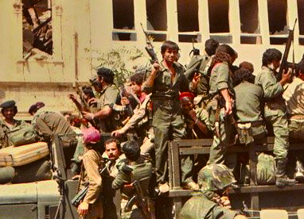
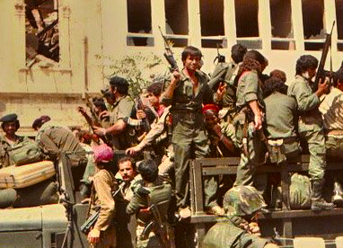
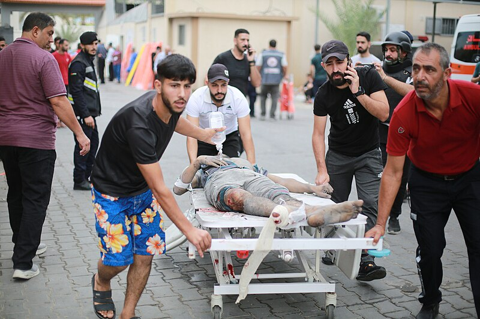
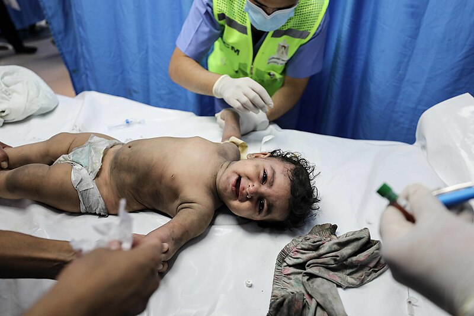
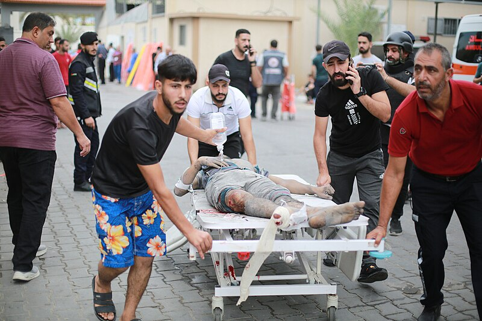
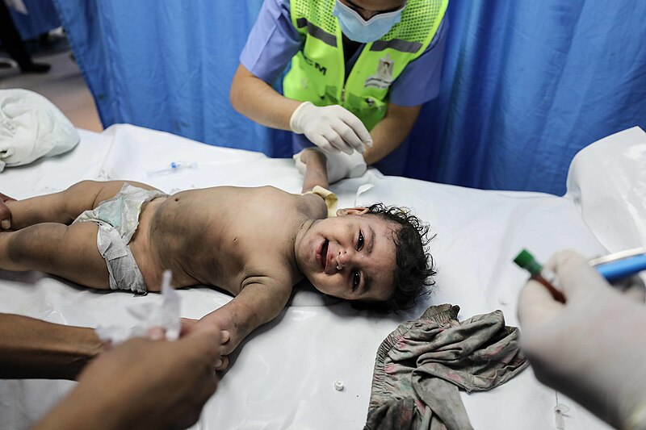

التسلسل الزمني للصراع الفلسطيني مع الاحتلال
1909 م
انشاء أول كيبوتس صهيوني الذي حُصر العمل فيه لليهود فقط . تأسيس مدينة تل أبيب شمالي يافا التي كانت مُخصصة لسكن اليهود فقط.
1917 م
وعد بلفور. وزير الخارجية البريطاني بلفور قدم تعهدات بريطانية بإنشاء «الوطن القومي اليهودي في فلسطين»
1923-1919 م
الموجة الثالثة من المهاجرين الصهاينة التي شملت أكثر من 35,000 يهودي مما زاد نسبة السكان اليهود في فلسطين إلى 12 ٪ من المجموع الكلي. ملكية اليهود للأراضي عام 1923 تبلغ 3 ٪ من مساحة فلسطين.
1928-1924 م
وصول الدفعة الرابعة من المهاجرين الصهاينة المكوّنة من 67,000 مهاجريهودي، وأغلبيتهم كانت من بولندا. تزايد نسبة السكان اليهود في فلسطين إلى 16 ٪ من المجموع الكلي، وتزايدت ملكيتهم للأراضي لتصبح 4.2 ٪ من مساحة البلد في عام 1928.
1929 م
وصول الدفعة الخامسة من المهاجرين الصهاينة التي شملت أكثر من 250,000 مهاجر يهودي، مما زاد نسبة السكان اليهود في فلسطين إلى 30٪، وأما عن نسبة ملكيتهم للأراضي في عام 1939 بلغت 5.7 ٪ من مساحة البلاد.
1931 م
تتخذ إيتزل والأرغون (منظمتان صهيونيتان إنشقتا عن الهاغانا) سياسة أكثر صرامة وعدوانية ضد الفلسطينيين بقيادة جابوتينسكي.
1937 م
عصابتي إيتزل والارغون، المرتبطتان بالحركة الصهيونية التنقيحية تحت قيادة زئيف جابوتينسكي، تطالبان بالقيام بهجمات مسلحة ضد الفلسطينيين
اللجنة الملكية (بيل) توصي بتقسيم فلسطين إلى دولة يهودية تضم 33 ٪ من البلاد بما في ذلك حيفا والجليل والسهل الساحلي شمال أسدود؛ والدولة العربية في باقي البلاد لتصبح جزءا من شرق الأردن؛ والقدس تبقا تحت الانتداب البريطاني. لنجاح خطة التقسيم اشترطت اللجنة نقل (أو ترحيل) الفلسطينيين من الجزء اليهودي إلى الجزء العربي حتى إذا كان النقل إجباري.
1938 م
العصابات الصهيونية إيتزل / ارغون تقتل 119 فلسطيني، والفلسطينيون ينتقمون بقتل 8 يهود.
الاحتلال البريطاني يستعيد السيطرة على المدينة القديمة في القدس الشريف من المجاهدين الفلسطينيين.
1939 م
وصول أكثر من 60,000 صهيوني لفلسطين بما في ذلك 20,000-25,000 مُهاجر صهيوني دخلوا فلسطين بصورة غير قانونية (من نيسان / أبريل 1939 إلى كانون الأول / ديسمبر 1945)، مما أدى لزيادة عدد السكان اليهود في فلسطين إلى 31 ٪. نسبة ملكية الأراضي الصهيونية ترتفع إلى 6.0 ٪ من مساحة فلسطين.
1945 م
وزير الخارجية البريطاني أرنست بيفين يعلن استمرار الهجرة اليهودية إلى فلسطين بعد استنفاذ الحصة المخصصة في الكتاب الأبيض الصادر عام 1939.
1947 م
توصي الجمعية العامة للأمم المتحدة بخطة لتقسيم فلسطين وتخصص فيها 56.5 ٪ من فلسطين للدولة اليهودية و 43 ٪ للدولة العربية والقدس الشريف تحت إشراف دولي؛ 33 عضوًا صوتوا مع التقسيم مقابل 13 ضد القرار وامتناع 10 أعضاء عن التصويت. انسحاب الممثلين العرب.
لهاغانا وإيتزل يهاجمان القرى والتجمعات البدوية الموجودة في السهل الساحلي شمال تل أبيب في أول عملية «تطهير» عرقي.
1948 م
حدثت مجزرة اللد، حيث قامت وحدة كوماندوز صهيونية بقيادة «موشيه ديان» بارتكاب مجزرة في مدينة الّلد بفلسطين، حيث اقتحمت المدينة وقت المساء تحت وابل من القذائف المدفعية. وكانت عملية «داني» -الاسم الرمزي الموحي بالبراءة- للهجوم على مدينتي اللد والرملة الواقعتين في منتصف الطريق بين يافا والقدس.
1987 م
حدوث الانتفاضة الفلسطينية الأولى وأدت الى استشهاد 1,300 فلسطيني على يد الجيش الصهيوني، كما قتل 160 إسرائيليّا على يد الفلسطينيين. بالإضافة لذلك يُقدّر أن 1,000 فلسطيني يُزعم أنهم متعاونين مع السلطات الصهيونية قتلوا على يد فلسطينيين، على الرغم من أن ذلك ثبت على أقل من نصفهم فقط ,هدأت الانتفاضة في العام 1991، وتوقفت نهائياً مع توقيع اتفاقية أوسلو بين إسرائيل ومنظمة التحرير الفلسطينية عام 1993
2000 م
حدوث الانتفاضة الثانية او انتفاضة الأقصى راح ضحيتها حوالي 4412 فلسطينيًا و48322 جريحًا. وأما خسائر الجيش الصهيوني تعدادها 334 قتيل ومن المستوطنين 735 قتيل، وليصبح مجموع القتلى والجرحى الإسرائيليين 1069 قتيل و4500 جريح، وعطب 50 دبابة من نوع ميركافا ودمر عدد من الجيبات العسكرية والمدرعات الإسرائيلية. من ابرز شهداء انتفاضة الأقصى الشهيد الطفل محمد الدرة.
2008 م
حرب غزة هي عملية عسكرية ممتدة شنها الجيش الصهيوني على قطاع غزة في فلسطين من يوم 27 ديسمبر 2008 إلى 18 يناير 2009.
2012 م
الحرب على غزة حرب استمرت ثمانية أيام شنها جيش الدفاع الصهيوني على قطاع غزة الذي تسيطر عليه حماس، وبدأت في 14 نوفمبر 2012 بقتل أحمد الجعبري، رئيس الجناح العسكري لحماس في غزة نتيجة غارة جوية إسرائيلية
2014 م
الحرب على غزة هو نزاع عسكري بين إسرائيل وحركات المقاومة الفلسطينية في قطاع غزة بدأ فعلياً يوم 8 يوليو 2014 والتي أطلق عليها الجيش الصهيوني عملية الجرف الصامد وردت كتائب عز الدين القسام بمعركة العصف المأكول. هذه الحرب أدت الى استشهاد 174 2 فلسطيني، منهم 743 1مدني (81%) و530 طفل و302 امرأة و64 غير معروفين و340 مقاوم(16%)
2023 م
عمليّة طُوفان الأقصى, هي عمليةٌ عسكرية مُمتدة شنَّتها فصائلُ المقاومة الفلسطينية في قطاع غزة وعَلى رأسِها حركة حماس عَبر ذراعها العسكري كتائب الشهيد عز الدّين القسام في أوّل ساعات الصباح من يوم السبت (7 تشرين الأول/أكتوبر 2023 م) الموافق لـ (22 ربيع الأوَّل 1445 هـ)، إذ أعلَن القائِد العام للكتائب مُحمَّد الضيف، بدء العملية ردًّا على الانتهاكات الإسرائيلية في باحات المَسْجِدِ الأقصى المُبَارك واعتداء المُستوطنين الإسرائيليين على المُواطنين الفلسطينيين في القُدس والضّفّة والدّاخل المُحتَل
 



 


